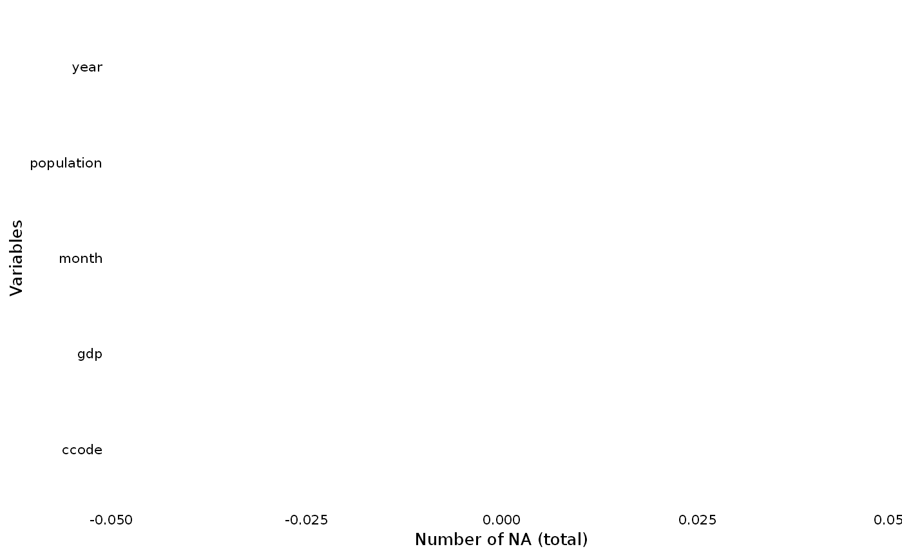

This function plots a ggplot to visualize the distribution of NAs across all variables in the data set.
Arguments
- dat
Your data set
- yaxis
Label of your y axis ("Variables" is default)
- perc
If TRUE (default) plot returns the number of NAs in percentage
- row_wise
If TRUE (FALSE is default) plot return the number of NAs per row
- add
If TRUE (FALSE is default) it generates a new data frame with na_count and percentage share of NAs for each row
Value
Depending on the selection, the function returns a ggplot figure that presents the distribution of NAs in the data set or adds the information on the row-wise NA share
Examples
data(toydata)
overview_na(toydata, perc = FALSE)
